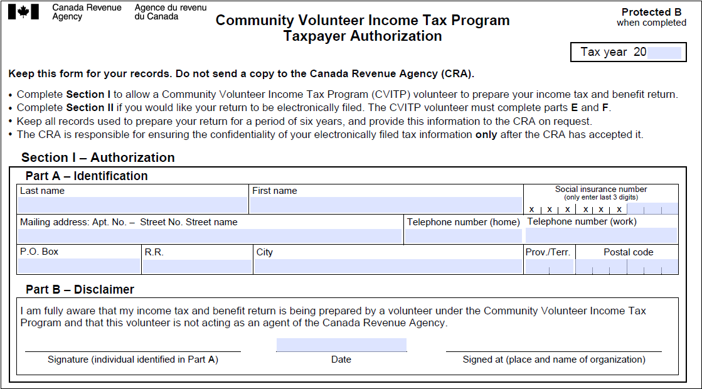

Getting the individual’s authorization and information
On this page
- Getting authorization to begin preparing tax returns virtually
- Organizing slips and receipts
- Verifying the information on slips and receipts
- Questions to ask the individual
Getting authorization to begin preparing tax returns virtually
Before you start preparing a tax return for an individual, they must complete and sign Section I – Authorization of form TIS60, Community Volunteer Income Tax Program – Taxpayer Authorization.
Nice to know
A TIS60 must be signed for each tax return you prepare.
TIS60, Community Volunteer Income Tax Program – Taxpayer Authorization
Section I
Click image to see full size version
Text version of this screenshot
Community Volunteer Income Tax Program – Taxpayer Authorization form
Protected B
Section I – Authorization
Part A – Identification section is blank
Part B – Disclaimer section is blank
- Part A – Identification identifies the individual
- Part B – Disclaimer, by signing this form the individual acknowledges that their tax return is being prepared by a CVITP volunteer. The individual whose information is in Part A must sign Part B. It may also be signed by a legal representative on the individual’s behalf, provided they have the authorization to do so.
Getting authorization to begin preparing tax returns virtually
Signing form TIS60 in virtual clinics
Only if you are participating in a free virtual clinic can you get an individual’s verbal consent instead of signing Section I of the TIS60. Additionally, for verbal consent you must ensure the individual is aware of and agrees to the following conditions:
- You are a volunteer under the CVITP and not acting as an agent of the Canada Revenue Agency
Read the script to the individual:
Hello, my name is (insert name). I’m a volunteer from the Community Volunteer Income Tax Program. I will prepare your income tax and benefits return(s) electronically for you with the information you supplied.
I am a volunteer with (organization name) here to provide this service to you. I am not an employee of the Canada Revenue Agency.
Do I have your permission to complete and file your income tax return?
- The method(s) of communication may potentially be unsecure
Read the script to the individual:
We will be discussing your personal information so that I may prepare your tax return. I have and will continue to take all reasonable efforts to ensure information is kept safe, however, the method of communication we are using may not be secure.
Regarding use of cell phone, video or email:
Do you consent to the use of a cell phone or cordless telephone to discuss information needed to prepare your income tax and benefits return(s)?
Do you consent to the use of videoconference (insert name of application) to discuss information needed to prepare your income tax and benefits return(s)?
Do you consent to the use of unsecure email to exchange written discussions, communication and documents needed to prepare your income tax and benefits return(s)?
- Service will not be provided if the individual chooses to discontinue the call
Read the script to the individual:
You may choose to discontinue this call at any time. If you choose to do so, or fail to provide the information needed to prepare your tax return, I will not be able to assist you.
Do you acknowledge what I just read to you?
Once you receive verbal consent, Section I – Authorization of the TIS60 is considered completed.
Organizing slips and receipts
You may consider organizing the slips and receipts as they apply to the different sections of the income tax return to save time and reduce errors. For example, keeping all T4 slips together makes them easier to find when entering employment income information into the tax software.
The most common information slips and receipts may include:
- T4, T5, T5007, T4AA and T4(OAS)
- receipts for child care, medical expenses, and RRSP contributions
- charitable donation receipts, including those made in the current year and any donations made and not claimed within the last five years
- tuition receipts, such as T2202, TL11A, or TL11B
Verifying the information on the slips and receipts
Confirm the accuracy of the information reported on the slips (for example, name, SIN, and issuer) with the individual. If a slip has inaccurate information, the individual must contact the issuer of the slip to have it corrected. Individuals waiting for a slip issue to be resolved are still encouraged to have their tax return prepared before the deadline. This will ensure there are no interruptions to any benefit or credit payments they may be entitled to, and help avoid late-filing penalties.
If an individual is missing a slip, you can obtain their information by:
- using Auto-fill my return or sign into Represent a client for the individual
- calling the dedicated help line for volunteers at 1-866-398-3488
- asking the individual to contact their employer or payer
- using pay stubs or statements to estimate the missing income and deductions
Note
If you are calling the dedicated help line for volunteers to obtain missing information, you need to obtain the individual’s authorization.
This needs a label
- If the individual has authorized you to use the Auto-fill my return service to prepare their tax return you may call the dedicated help line for missing information on the same calendar day the authorization was made.
- If the individual has not authorized use of the Auto-file my return service then they need to be present while you make the call to speak directly with the telephone agent to answer some confidentiality questions. Once confidentiality is met, the individual can provide the telephone agent with verbal authorization for you to speak on their behalf for the duration of that telephone call.
Questions to ask the individual
The following list includes suggested questions you can ask the individual to ensure you have all the information needed to prepare their tax return:
- How many tax years do you need me to prepare for you? For which years?
- Do you have any family members, such as a spouse or common-law partner, who must also prepare their tax return?
- Do you have children or other dependants? How many? What are their ages?
- Have you, your spouse or dependant(s) (if applicable) been approved for the T2201, Disability Tax Credit Certificate?
- How many sources of income did you have this year? For example, multiple employers and interest income.
- Has your living situation changed within the last year? This may include a change in marital status, address, or dependants (custody change, adoption, additional dependants)?
- Did you earn any tips?
If you know or suspect that the information an individual provides to you is not accurate or contains omissions, withdraw your services.